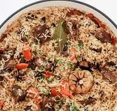

An'anaviy O'zbek palovi
Kirish
Bu ajoyib palov retsepti avloddan-avlodga o'tib kelmoqda. U tayyorlash oson va juda mazali!
Masalliqlar
| Masalliq | Miqdori | Izoh |
|---|---|---|
| Guruch | 1kg | Devzira yoki Lazer |
| Go'sht | 500gr | Qo'y yoki mol go'shti |
| Sabzi | 500gr | Uzun qilib to'g'ralgan |
| Piyoz | 3,4 dona | O'rtacha kattalikda |
| Yog' | 200gr | O'simlik yoki qo'y yog'i |
Tayyorlash tartibi
- Qozonga yog' solib qizdiring
- Piyozni qovuring
- Go'shtni solip qovuring
- Sabzini solip qovuring
- Guruchni solib, suv quying
- Dimlab pishiring
Tayyorlash uchun maslahatlar
- Guruchni 2 soat ivitib qo'ying
- Go'shtni yirik bo'laklarda to'g'rang
- Sabzini qishloqi usulda to'g'rang
- Sabzini solip qovuring
- Ziravorlarni me'yorida ishlating
- Dimlab pishiring